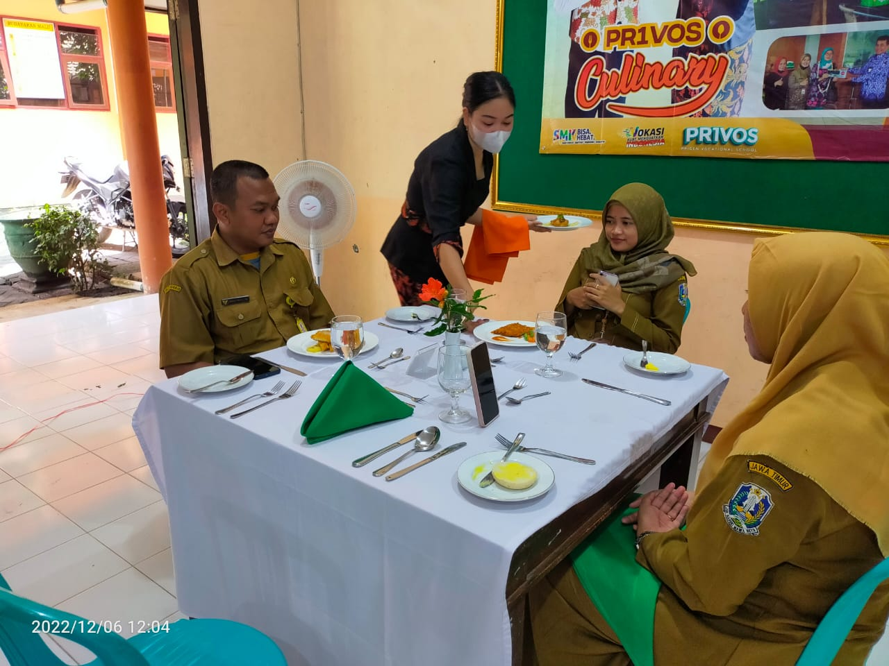
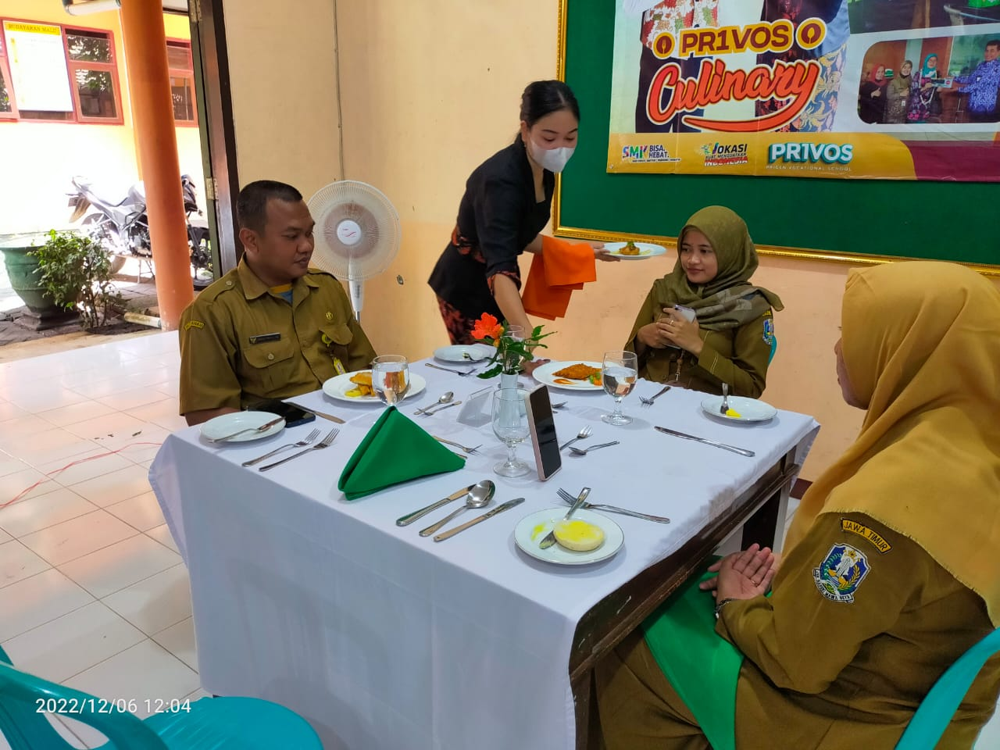

•JURUSAN
Program Keahlian Perhotelan menjadi salah satu jurusan pada jenjang Sekolah Menengah Kejuruan atau SMK yang masih cukup banyak diminati hingga saat ini. Seluruh siswa/i akan mempelajari materi-materi yang berkaitan dengan dunia perhotelan dan pariwisata. Industri perhotelan merupakan salah satu sektor industri yang selalu mengalami perkembangan pesat setiap tahunnya. Bagi seluruh siswa/i masuk jurusan perhotelan, akan memiliki prospek atau peluang kerja yang cukup besar. Dalam industri perhotelan juga bisa memilih berbagai macam profesi yang sesuai dengan minat dan keahlian. Program Keahlian Perhotelan memiliki keahlian yang beragam, karena di jurusan ini akan mendapat berbagai materi dan ilmu yang bisa di manfaatkan bahkan dalam kehidupan sehari-hari. Program Keahlian Perhotelan merencanakan konsentrasi pada Perhotelan, dengan rincian mata pelajaran sebagai berikut :
•Hotel Front Office Operation atau Operasional Kantor Depan.
•Hotel Housekeeping Opertion atau Operasional Tata Graha
•Hotel Laundry Operation atau Operasional Binatu
•Hotel Food and Beverage Operation atau Operasional Pelayanan Makanan dan Minuman.


 
